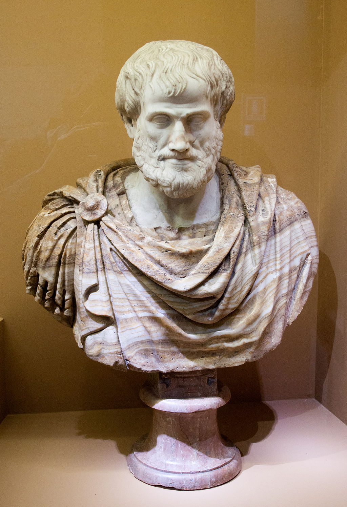
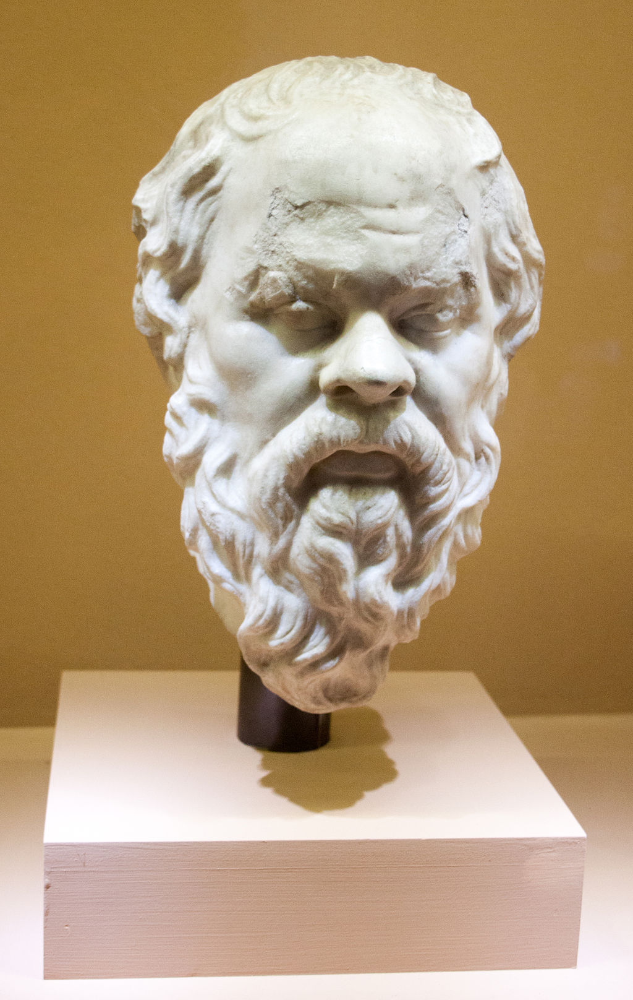

<head>
<meta charset="UTF-8" />
<meta name="keywords" content="drawing, painting" />
<meta name="description" content="drawings by Sunjy" />
<title>Sunjy</title>
<link rel="shortcut icon" type="image/x-icon" href="../../mImages/mCommon/favicon.ico" media="screen" />
<link rel="stylesheet" type="text/css" href="../../mCsses/mCommon/mCssA.css" />
<link rel="stylesheet" type="text/css" href="../../mCsses/mCommon/mCssB.css" />
<link rel="stylesheet" type="text/css" href="../../mCsses/mCommon/mCssC.css" />
<link rel="stylesheet" type="text/css" href="../../mCsses/mCommon/mCssD.css" />
<link rel="stylesheet" type="text/css" href="../../mCsses/mContent/mCssA.css" />
<link rel="stylesheet" type="text/css" href="../../mCsses/mContent/mCssB.css" />
<link rel="stylesheet" type="text/css" href="../../mCsses/mContent/mCssC.css" />
<link rel="stylesheet" type="text/css" href="../../mCsses/mContent/mCssD.css" />
</head>
<script type="text/javascript" src="../../mScripts/mContent/mContentAA.js" /></script>
<script type="text/javascript" src="../../mScripts/mContent/mContentAB.js" /></script>
<script type="text/javascript" src="../../mScripts/mContent/mContentAC.js" /></script>
<script type="text/javascript" src="../../mScripts/mContent/mContentAD.js" /></script>
<script type="text/javascript"></script> 
<script type="text/javascript">
document.write('<div class="mImgAbsolute"></div>');
/*
document.write('<p class="mFontSizeBColor" />From a white paper...</p>');
document.write('<table class="center"><tr><td>');
document.write('');
document.write('</td></tr></table>');
*/
</script>


<script type="text/javascript">
document.write('<p class="mFontSizeBColor" />Bust of Aristotle</p>');
document.write('<p class="mFontSizeSColor" />This bust of Aristotle is a marble Roman copy after a Greek bronze original by Lysippos from 330 BC.<br><br>The alabaster mantle is a modern addition. Aristotle (384–322 BC) was a philosopher during the Classical period in Ancient Greece, the founder of the Lyceum and the Peripatetic school of philosophy and Aristotelian tradition.<br><br>Along with his teacher Plato, he is considered the “Father of Western Philosophy.” His writings cover many subjects and provided a complex synthesis of the various philosophies existing before him.<br><br>At seventeen years of age, he joined Plato’s Academy in Athens and remained there until the age of thirty-seven.<br><br>Shortly after Plato died, Aristotle left Athens and, at the request of Philip II of Macedon, tutored Alexander the Great beginning in 343 BC.<br><br>Aristotle’s works contain the earliest known formal study of logic, and medieval scholars studied them.<br><br>He also influenced Islamic thought during the Middle Ages, as well as Christian theology.<br></p>');
document.write('<table class="center" /><tr><td>');
document.write('<br>The alabaster mantle is a modern addition. Aristotle (384–322 BC) was a philosopher during the Classical period in Ancient Greece, the founder of the Lyceum and the Peripatetic school of philosophy and Aristotelian tradition.<br><br>Along with his teacher Plato, he is considered the “Father of Western Philosophy.” His writings cover many subjects and provided a complex synthesis of the various philosophies existing before him.<br><br>At seventeen years of age, he joined Plato’s Academy in Athens and remained there until the age of thirty-seven.<br><br>Shortly after Plato died, Aristotle left Athens and, at the request of Philip II of Macedon, tutored Alexander the Great beginning in 343 BC.<br><br>Aristotle’s works contain the earliest known formal study of logic, and medieval scholars studied them.<br><br>He also influenced Islamic thought during the Middle Ages, as well as Christian theology.<br>" />');
document.write('</td></tr></table>');
document.write('<p class="mFontSizeBColor" />Portrait of Socrates</p>');
document.write('<p class="mFontSizeSColor" />This bust is a 1st cent AD marble sculpture of Socrates (470-399 BC) is a Roman copy of a Greek original by Lysippos (c. 395-305 BC) on the Pompeian of Athens.<br><br>It was found at the construction site of the monument to Vitorio Emanuel II, Rome, Italy.<br><br>Socrates was a classical Athenian philosopher credited as one of the founders of Western philosophy, and as being the first moral philosopher of the Western ethical tradition of thought.<br><br>He made no writings and is known chiefly through the accounts of classical writers writing after his lifetime, particularly his students Plato and Xenophon.<br><br>Plato’s dialogues are among the most comprehensive accounts of Socrates to survive, though it is unclear the degree to which Socrates’s views are hidden in the work.<br><br>Through his portrayal in Plato’s dialogues, Socrates has become renowned for his contribution to the fields of ethics.<br><br>Socrates exerted a strong influence on philosophers in later antiquity and the modern era.<br><br>Depictions of Socrates in art, literature, and popular culture have made him one of the most widely known figures in the Western philosophical tradition.<br></p>');
document.write('<table class="center" /><tr><td>');
document.write('<br>It was found at the construction site of the monument to Vitorio Emanuel II, Rome, Italy.<br><br>Socrates was a classical Athenian philosopher credited as one of the founders of Western philosophy, and as being the first moral philosopher of the Western ethical tradition of thought.<br><br>He made no writings and is known chiefly through the accounts of classical writers writing after his lifetime, particularly his students Plato and Xenophon.<br><br>Plato’s dialogues are among the most comprehensive accounts of Socrates to survive, though it is unclear the degree to which Socrates’s views are hidden in the work.<br><br>Through his portrayal in Plato’s dialogues, Socrates has become renowned for his contribution to the fields of ethics.<br><br>Socrates exerted a strong influence on philosophers in later antiquity and the modern era.<br><br>Depictions of Socrates in art, literature, and popular culture have made him one of the most widely known figures in the Western philosophical tradition.<br>" />');
document.write('</td></tr></table>');
</script>


